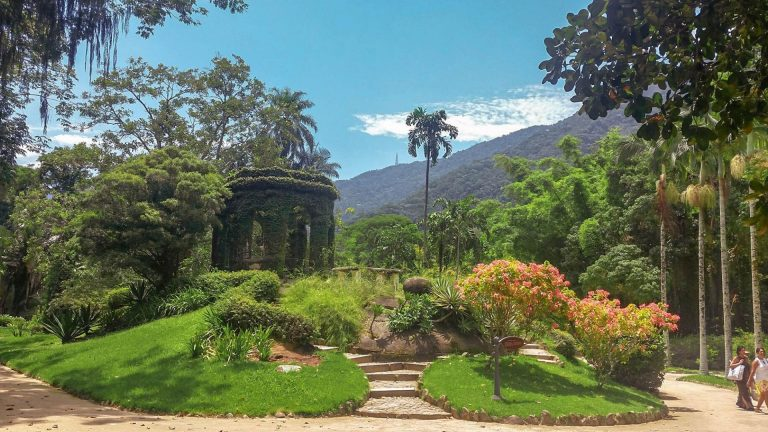

Rio de Janeiro
O Rio de Janeiro é uma das cidades mais emblemáticas e visitadas do Brasil e do mundo. Seu apelo turístico está relacionado não só às belezas naturais, como praias e montanhas, mas também à sua rica cultura, história e diversidade. Conhecida por sua famosa orla com praias icônicas como Copacabana e Ipanema, o Rio também é reconhecido mundialmente pelo Carnaval, suas festas vibrantes, e pela hospitalidade de seu povo. A cidade foi também sede de importantes eventos internacionais, como os Jogos Olímpicos de 2016 e a Copa do Mundo de 2014, o que consolidou ainda mais sua relevância no cenário turístico global.
Além disso, a Cidade Maravilhosa é um destino que oferece atrações para diversos tipos de turistas, desde quem busca lazer e relaxamento nas praias, até os que se interessam por cultura, arte e gastronomia. O Rio é um mix de natureza exuberante, monumentos históricos, bairros culturais e uma vida noturna efervescente, o que a torna um dos destinos mais completos para quem deseja vivenciar diferentes experiências.
Principais pontos turísticos
- Cristo Redentor
- Pão de Açúcar
- Praias de Copacabana e Ipanema
- Jardim Botânico 
- Lapa e os Arcos da Lapa
Um dos maiores símbolos do Brasil e patrimônio da humanidade, o Cristo Redentor é uma estátua de 38 metros de altura que se localiza no topo do Corcovado. Ele oferece uma vista panorâmica de 360 graus do Rio, abrangendo pontos icônicos como as praias de Copacabana e Ipanema, a Baía de Guanabara, e o Pão de Açúcar.
O Cristo é um dos pontos turísticos mais visitados do mundo, representando não apenas um ícone religioso, mas também um dos principais cartões-postais da cidade.
O Pão de Açúcar é um conjunto de montanhas que formam um dos cenários mais famosos do Rio de Janeiro. A subida é feita por meio de bondinhos que levam os turistas até o topo, proporcionando uma vista espetacular da cidade e da Baía de Guanabara.
É um dos locais mais visitados do Brasil e oferece uma das melhores vistas panorâmicas da cidade.

Copacabana e Ipanema são duas das praias mais famosas do mundo. Com amplos calçadões, quiosques e atividades esportivas, essas praias são um centro de lazer tanto para turistas quanto para os cariocas. Ipanema é também famosa pela música "Garota de Ipanema", e ambas as praias possuem uma vida noturna agitada.
São o coração do turismo de sol e praia no Rio, além de serem locais emblemáticos para eventos como o Réveillon e o Carnaval.
O Jardim Botânico do Rio de Janeiro é um dos mais importantes do país, abrigando uma vasta coleção de plantas nativas e exóticas. Além de ser um espaço de lazer e contemplação, o jardim serve também como centro de pesquisa científica.
É um local ideal para quem busca tranquilidade e contato com a natureza, além de ser uma importante área de conservação da flora brasileira.
A Lapa é um dos bairros mais tradicionais do Rio de Janeiro, conhecido por sua vida noturna vibrante e pelos Arcos da Lapa, um antigo aqueduto de pedra que remonta ao período colonial. O bairro é famoso pelos bares, casas de samba e a energia festiva que permeia a região.
A Lapa é um ponto de encontro para amantes da música e da cultura, especialmente do samba, e oferece uma experiência noturna única no Rio de Janeiro.
Principais pontos gastronômicos
- Feira de São Cristóvão
- Localização: Zona Norte.
- Bar Urca
- Localização: Urca.
- Confeitaria Colombo
- Localização: Centro da cidade.
- Restaurante Cipriani (Hotel Copacabana Palace)
- Localização: Copacabana.
A Feira de São Cristóvão é um espaço dedicado à cultura nordestina. Lá, você encontra barracas que servem pratos típicos, como carne de sol, baião de dois, feijão verde e diversas sobremesas nordestinas, além de música ao vivo e dança.
É um lugar imperdível para quem deseja experimentar a autêntica comida nordestina no Rio de Janeiro, além de ser um centro de cultura popular.
O Bar Urca é conhecido por sua comida simples e saborosa, com destaque para o "peteleco", um tira-gosto servido com pão e sardinha. O bar também é famoso pela vista incrível da Baía de Guanabara e do Pão de Açúcar.
Oferece uma experiência gastronômica simples, mas deliciosa, em um ambiente agradável com vista privilegiada da cidade.
Fundada em 1894, a Confeitaria Colombo é uma das mais tradicionais do Rio de Janeiro, oferecendo um cardápio com doces refinados, como o "mil folhas", e opções de salgados, em um ambiente de luxo com estilo Art Nouveau.
Além da gastronomia, a Confeitaria Colombo é um ícone histórico e cultural, com seu ambiente deslumbrante e sua importância na história do Rio de Janeiro.
O Cipriani é o restaurante de alta gastronomia do famoso Hotel Copacabana Palace, que oferece uma cozinha italiana requintada, com pratos sofisticados e ingredientes de alta qualidade.
É um dos restaurantes mais luxuosos e renomados da cidade, sendo uma experiência gastronômica de alto nível para quem busca algo exclusivo e de prestígio.
Principais pontos culturais
- Museu do Amanhã
- Localização: Porto Maravilha.
- Teatro Municipal
- Localização: Centro da cidade.
- Museu de Arte do Rio (MAR)
- Localização: Porto Maravilha.
- Centro Cultural Banco do Brasil (CCBB)
- Localização: Centro da cidade.
O Museu do Amanhã é um museu interativo e futurista que aborda questões como sustentabilidade, ciência e o futuro da humanidade. O prédio, projetado pelo arquiteto Santiago Calatrava, é uma obra de arte por si só, com um design inovador.
É um dos mais modernos e importantes museus de ciência do Brasil, com exposições imersivas e interativas que engajam os visitantes em temas globais relevantes.
Inaugurado em 1909, o Teatro Municipal do Rio de Janeiro é um dos mais importantes espaços culturais da cidade, com uma arquitetura impressionante e uma programação variada, incluindo ópera, balé e concertos de música clássica.
É um símbolo de sofisticação cultural e artística no Rio, atraindo amantes da música e da arte dramática.
O MAR é um dos principais museus de arte contemporânea do Brasil, com exposições que exploram a diversidade cultural e a identidade brasileira. O edifício é um exemplo de arquitetura moderna e a programação cultural é focada nas questões sociais e culturais do país.
O MAR desempenha um papel crucial na promoção da arte contemporânea e no debate sobre a identidade cultural brasileira.
O CCBB é um dos centros culturais mais ativos do Rio de Janeiro, oferecendo uma programação diversificada que inclui exposições de arte, filmes, teatro e música. O prédio histórico é um marco arquitetônico da cidade.
O CCBB é um importante centro de difusão cultural e artístico no Rio, com acesso gratuito a muitas de suas atrações.